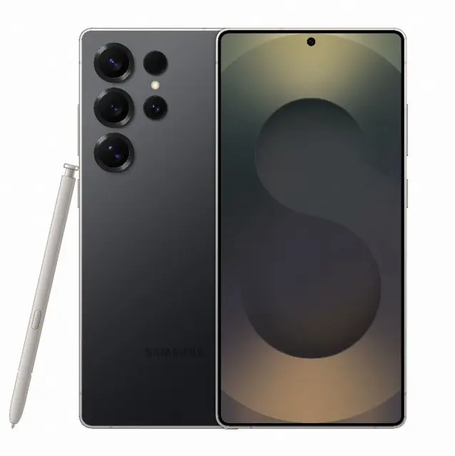

Galaxy S25 Ultra Titanium
Objavljeno: 10.01.2026.
Samsung Galaxy S25 Ultra Titanium predstavlja vrhunac Samsungove mobilne tehnologije. Titanijsko kućište osigurava izdržljivost, dok elegantan dizajn naglašava premium karakter uređaja.
Novi Snapdragon procesor u kombinaciji s Galaxy AI sustavom omogućuje brže performanse, inteligentnu obradu podataka i optimizaciju baterije u realnom vremenu.
Kamera od 200 MP nudi profesionalnu kvalitetu fotografija, dok S Pen dodatno unapređuje produktivnost i kreativni rad korisnika.
← Povratak na novosti